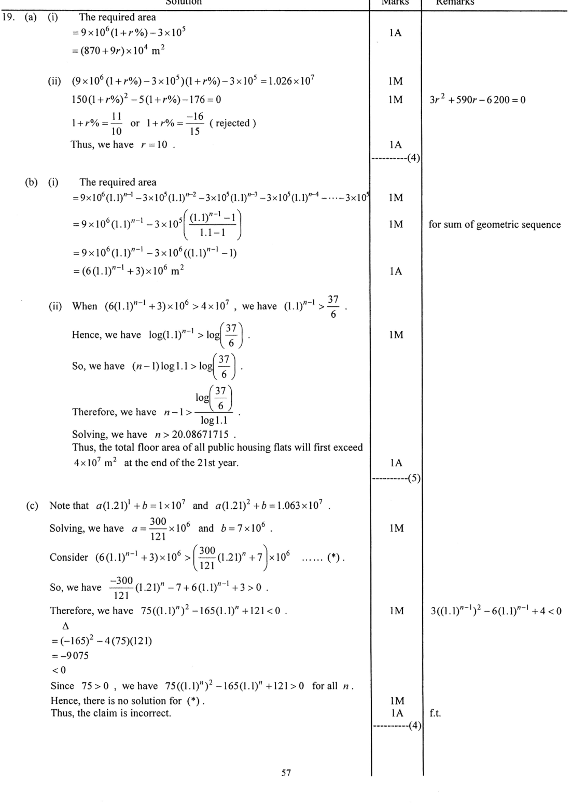

2013 DSE 數學 P1 Q19 答案＋詳解
題目（中文卷）
現對某城市公共房屋的發展進行研究。已知第 1 年年終時所有公屋單位的總樓面面積為 $9 \times 10^6 \text{ m}^2$，並且在隨後各年裏，每年所落成的公屋單位的總樓面面積均為前一年年終時全部公屋單位的總樓面面積之 $r\%$，其中 $r$ 爲一常數，而每年所拆卸的公屋單位的總樓面面積均為 $3 \times 10^5 \text{ m}^2$。現知第 3 年年終時所有公屋單位的總樓面面積為 $1.026 \times 10^7 \text{ m}^2$。
(a) (i) 以 $r$ 表第 2 年年終時所有公屋單位的總樓面面積。
(ii) 求 $r$。
(b) (i) 以 $n$ 表第 $n$ 年年終時所有公屋單位的總樓面面積。
(ii) 哪一年年終時所有公屋單位的總樓面面積會首次超過 $4 \times 10^7 \text{ m}^2$？
(c) 現假設第 $n$ 年年終時所需公屋單位的總樓面面積為 $(a(1.21)^n + b) \text{ m}^2$，其中 $a$ 及 $b$ 均為常數。某些研究結果顯示下列資料：
| $n$ | 第 $n$ 年年終時所需公屋單位的總樓面面積（$\text{m}^2$） |
|---|---|
| 1 | $1 \times 10^7$ |
| 2 | $1.063 \times 10^7$ |
一研究助理宣稱基於上述假設，某年年終時所有公屋單位的總樓面面積會大於所需公屋單位的總樓面面積。該宣稱是否正確？試解釋你的答案。
試卷完 —
English version（英文卷題目）
The development of public housing in a city is under study. It is given that the total floor area of all public housing flats at the end of the 1st year is $9 \times 10^6 \, \text{m}^2$ and in subsequent years, the total floor area of public housing flats built each year is $r\%$ of the total floor area of all public housing flats at the end of the previous year, where $r$ is a constant, and the total floor area of public housing flats pulled down each year is $3 \times 10^5 \, \text{m}^2$. It is found that the total floor area of all public housing flats at the end of the 3rd year is $1.026 \times 10^7 \, \text{m}^2$.
(a) (i) Express, in terms of $r$, the total floor area of all public housing flats at the end of the 2nd year.
(ii) Find $r$.
(4 marks)
(b) (i) Express, in terms of $n$, the total floor area of all public housing flats at the end of the $n$th year.
(ii) At the end of which year will the total floor area of all public housing flats first exceed $4 \times 10^7 \, \text{m}^2$?
(5 marks)
(c) It is assumed that the total floor area of public housing flats needed at the end of the $n$th year is $(a(1.21)^n + b) \, \text{m}^2$, where $a$ and $b$ are constants. Some research results reveal the following information:
| $n$ | The total floor area of public housing flats needed at the end of the $n$th year ($\text{m}^2$) |
|---|---|
| 1 | $1 \times 10^7$ |
| 2 | $1.063 \times 10^7$ |
A research assistant claims that based on the above assumption, the total floor area of all public housing flats will be greater than the total floor area of public housing flats needed at the end of a certain year. Is the claim correct? Explain your answer.
(4 marks)
試卷完 —
官方評卷參考（Marking Scheme）

考評報告
甚差。大部分考生誤用r%而非1+r%求答案。甚差。大部分考生誤以為$9 \times 10^6(1 + r\%)^2 - 2(3 \times 10^5) = 1.026 \times 10^7$。甚差。大部分考生未能利用等比數列之和的公式得出正確答案。甚差。大部分考生未能利用對數得出正確答案。甚差。大部分考生即使能得出a及b的值,亦未能解不等式。